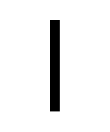
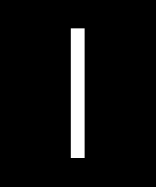

@charak
@charakLicht macht dick
Im Bereich Typografie gibt es viele optische Täuschungen, die bei der Gestaltung von Buchstaben ausgeglichen werden müssen. So sitzt der waagrechte Mittelstrich im Buchstaben H ein bisschen höher als die geometrische Mitte – sonst wirkt es für uns Menschen so, als läge er zu tief. Spitze und runde Buchstaben wie A oder O ragen ein wenig über die Buchstabenhöhe hinaus, damit sie in unseren Augen genauso groß erscheinen, wie Buchstaben mit einem geraden Abschluss (z.B. E, H oder X).
Eine Täuschung finde ich besonders absurd. Sie spielt bei der Anwendung von Schrift eine Rolle und ich kenne sie unter dem Begriff „Überstrahlung“. Hier eine Demonstration: Welche dieser zwei Linien erscheint dicker?


Mathematisch gemessen sind beide Linien genau 20 Bildschirm-Pixel breit und haben damit die gleiche Dicke. Trotzdem sieht die weiße Linie geringfügig dicker aus (und länger). Woran liegt das?
Die Bezeichnung „Überstrahlung“ verrät schon ein wenig, worum es geht: Helle Flächen überstrahlen dunklere und wirken dadurch größer. Die Täuschung tritt bei reflektierenden oder selbstleuchtenden Oberflächen auf, beispielsweise auf Straßenschildern oder Bildschirmen. Bei einer schwarzen Linie auf hellem Grund leuchtet der Hintergrund ein wenig in die schwarze Fläche hinein und scheint von dort etwas wegzunehmen – die Linie wirkt dünner. Umgekehrt leuchtet eine helle Linie über ihre Begrenzung hinaus noch etwas in einen dunklen Hintergrund hinein – und erscheint damit dicker.
Der Effekt ist lange bekannt. Gut erklärt hat ihn auch Frank Rausch in Antje Domanns lesenswerten Artikel über Lesbarkeit in verschiedenen Situationen.
Die Täuschung ausgleichen
Schriftarten, die speziell für reflektierende oder hinterleuchtete Beschilderung gestaltet wurden, bringen manchmal eine Variante mit, die den Überstrahlungs-Effekt ausgleicht. Zum Beispiel hat die Schrift Wayfinding Pro eine Negativ-Version, die geringfügig dünner ist als der reguläre Schnitt. Damit können helle und dunkle Schilder nebeneinander hängen, ohne dass die Schrift auf einem davon dicker aussieht. Wie man die Negativ-Version anwendet, erklärt eine FAQ-Seite des Schriftverlags FDI (engl.).
Auch auf Websites ist es möglich, die Wirkung der Überstrahlung abzumildern. In Webkit-Browsern (Chrome, Edge, Safari) funktioniert es, dem invers gesetzten Text (d. h. helle Schrift auf dunklem Grund) die CSS-Eigenschaft -webkit-font-smoothing: antialiased zu geben. Details dazu im Artikel Please Stop “Fixing” Font Smoothing (engl.). Genau wie der Autor Dmitry Fadeyev würde ich diese Methode aber nicht empfehlen, da sie nur für wenige Szenarien funktioniert und kein gültiger Webstandard ist.
Inzwischen verwenden rund 90 % der Internet-Nutzer:innen einen Browser, der variable Schriften unterstützt. Mit solchen Schriften kann man die Strichstärke leicht anpassen, z. B. bei inversem Text auf font-weight: 350 verringern (wenn die positiv gesetzte Schrift font-weight: 400 besitzt). Je nach Helligkeitswerten und Schrift muss man mit den Werten ein wenig herumprobieren, bis beide Farbvarianten gleich dick aussehen. Eine Anleitung mit praktischer Demo bietet der Artikel Dark Mode and Variable Fonts (engl.).
Diese Lösung finde ich vor allem dann wichtig, wenn dunkler Text auf hellem Grund und seine umgekehrte Variante nah beieinander stehen. Dann haben Leser:innen den direkten Vergleich und man sollte die Überstrahlung ausgleichen, damit der helle Text nicht zu fett aussieht.
Übrigens: Durch das Überstrahlen scheinen helle Buchstaben auf dunklem Grund auch ein wenig zusammenzulaufen und aneinander zu kleben. Dagegen hilft, die Buchstaben ganz leicht (!) zu sperren, im CSS z. B. mit letter-spacing: .01em;. Bei allen optischen Phänomenen zählt das Augenmaß weit mehr als mathematische Genauigkeit, getreu dem Zitat des Malers Josef Albers: „Nur der Schein trügt nicht.“
Update 6./11. Aug. 2020: Eben habe ich noch die Schrift „Darkmode“ entdeckt. Sie erschien im Mai 2020 und besitzt als variable font eine Einstellung extra für invers gesetzte Texte. Als englischen Fachbegriff für die Überstrahlung nutzt man halo effect, danke an Bruno Maag!
Update 8. Aug. 2020: Die tolle Website Identifont bietet eine Liste mit Positiv-/Negativ-Schriften.
---
Rubrik(en): #typografie